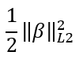

GLML1L2
- GLML1L2 supports the regularization models ridge, LASSO, and elastic net.
- GLML1L2 outputs a model table and, optionally, a factor table (GLM outputs only a model table).
You can input the model table and factor table to the GLML1L2Predict function.
GLML1L2 Syntax
Version 1.4
SELECT * FROM GLML1L2 (
ON { table | view | (query) } AS InputTable
[ OUT TABLE FactorTable (factor_table) ]
USING
TargetColumns ('target_column' [,...])
[ CategoricalColumns (({ 'categorical_column' [,...]) ]
ResponseColumn ('response_column')
[ Family ({ 'BINOMIAL' | 'GAUSSIAN' }) ]
[ Alpha (alpha) ]
[ Lambda (lambda) ]
[ StopThreshold (threshold) ]
[ MaxIterNum (max_iterations) ]
) AS alias;
GLML1L2 Syntax Elements
- FactorTable
- [Optional] Specify the name for the output table that contains the result. You must also specify CategoricalColumns.
- TargetColumns
- Specify the names of the InputTable columns that contain the variables to use as predictors (independent variables) in the model.
- CategoricalColumns
- [Optional] Specify the names of the InputTable columns that contain categorical variables, and which of their categories to use in the model.
- ResponseColumn
- Specify the name of the InputTable column that contains the responses.
- Family
- [Optional] Specify the distribution exponential family.
- Alpha
- [Optional] Specify the mixing parameter for penalty computation (see the following table). The alpha must be in [0, 1]. If alpha is in (0,1), it represents α in the elastic net regularization formula in Generalized Linear Model Functions.
alpha Regularization Type Parameter Description 0 Ridge ½ (0,1) Elastic net 
1 LASSO 
- Lambda
- [Optional] Specify the parameter that controls the magnitude of the regularization term. The value lambda must be in the range [0, 100]. The value 0 disables regularization.
- StopThreshold
- [Optional] Specify the convergence threshold. The threshold must be a nonnegative DOUBLE PRECISION value.
- MaxIterNum
- [Optional] Specify the maximum number of iterations over the data. The parameter max_iterations must be a positive INTEGER value in the range [1, 100000].
GLML1L2 Input
InputTable Schema
The table can have additional columns, but the function ignores them.
| Column | Data Type | Description |
|---|---|---|
| response_column | Any numeric SQL data type | Dependent/response variable. Cannot be NULL. |
| target_column | Any | [Appears one or more times.] Independent/predictor variable. Cannot be NULL. Note
Teradata recommends using the Scale function on numeric predictors before calling the function. |
| categorical_column | CHARACTER, VARCHAR, INTEGER, BYTEINT, DATE, TIME | [Column appears once for each categorical target_column.] Categorical independent/predictor variable. Variable name cannot be a Teradata reserved keyword, start with a digit, or contain any nonalphabetic character except underscore (_). Note
Do not enclose variable name in single quotation marks. |
GLML1L2 Output
Output Table Schema
The function displays the output table to the screen.
| Column | Data Type | Description |
|---|---|---|
| attribute | VARCHAR | Name of model attribute. |
| category | VARCHAR | [Appears only for categorical predictor.] Category (level) of predictor. |
| estimate | DOUBLE PRECISION | Estimate of model coefficient. |
| information | VARCHAR | Value of nonnumeric attribute, followed by "p" if predictor is used in model. |
FactorTable Schema
Each row in the factor table corresponds to a row in the input table.
| Column | Data Type | Description |
|---|---|---|
| target_column | Categorical column: INTEGER Numeric column: Same as in InputTable |
Categorical column: dummy variable Numeric column: Same as in InputTable. |
| response_column | DOUBLE PRECISION | Column copied from InputTable. |
GLML1L2 Examples
GLML1L2 Example: Ridge Regression, Family ('BINOMIAL')
Input
The input table is admission_train, as in GLM Example: Logistic Regression Analysis with Intercept.
SQL Call
Because the response variable is binary (the admitted column has two possible values), the call specifies Family ('BINOMIAL'). Alpha (0) indicates L2 (ridge regression) regularization.
DROP TABLE admissions_model;
DROP TABLE admissions_factor_table;
CREATE MULTISET TABLE admissions_model AS (
SELECT * FROM GLML1L2 (
ON admissions_train AS InputTable
OUT TABLE FactorTable (admissions_factor_table)
USING
TargetColumns ('masters', 'gpa', 'stats', 'programming')
CategoricalColumns ('masters', 'stats', 'programming')
ResponseColumn ('admitted')
Family ('BINOMIAL')
Alpha (0)
Lambda (0.02)
) AS dt
) WITH DATA;
Output
SELECT * FROM admissions_model;
attribute category estimate information -------------- -------- --------------------- ----------- AIC NULL 15.21927981934978 NULL programming beginner -1.0259430213730834 p Features # NULL 6.0 NULL programming novice -0.0820786516340258 p masters yes -1.2652530272653697 p Iterations # NULL 28.0 NULL Lambda NULL 0.02 NULL Alpha NULL 0.0 NULL stats beginner 0.08063465501463249 p Regularization NULL NULL Ridge stats novice -0.026716553307241597 p Family NULL NULL Binomial Converged NULL NULL true gpa NULL 0.38346423433872745 p Rows # NULL 40.0 NULL BIC NULL 27.041435998147332 NULL (Intercept) NULL 0.3838162407664626 p
select * from admissions_factor_table; masters_yes stats_beginner stats_novice programming_beginner programming_novice gpa admitted
----------- -------------- ------------ -------------------- ------------------ ---- --------
1 0 1 1 0 3.95 0.0
0 0 0 0 0 3.83 1.0
1 0 1 0 1 2.33 1.0
1 0 0 1 0 3.85 0.0
1 0 1 1 0 3.46 0.0
0 0 0 0 1 4.0 1.0
1 0 0 1 0 3.75 0.0
1 0 0 1 0 3.46 0.0
0 0 1 0 1 3.52 1.0
0 0 0 0 0 3.13 1.0
0 0 1 1 0 3.68 1.0
0 0 0 0 0 3.82 1.0
0 0 1 0 1 3.65 1.0
0 0 0 0 0 3.93 1.0
1 0 0 0 0 3.96 0.0
0 0 0 0 0 3.7 1.0
1 1 0 0 1 3.5 1.0
0 0 1 0 1 3.55 1.0
1 0 0 0 0 1.98 0.0
0 0 0 0 0 3.71 1.0
0 0 0 0 1 3.0 0.0
1 0 0 1 0 2.65 1.0
1 0 0 0 0 4.0 1.0
1 0 0 0 0 3.57 1.0
1 0 0 0 1 3.79 0.0
0 0 1 0 1 3.44 0.0
1 0 0 0 0 3.45 0.0
0 0 0 0 1 1.87 1.0
1 0 0 1 0 3.5 1.0
0 0 1 1 0 3.7 1.0
1 0 1 1 0 4.0 0.0
1 1 0 1 0 3.95 0.0
1 1 0 0 0 3.5 1.0
1 0 0 0 0 3.9 1.0
1 0 0 0 1 3.59 1.0
1 0 0 0 0 3.81 1.0
0 0 1 1 0 3.87 1.0
0 1 0 0 0 3.6 1.0
0 0 0 0 0 3.96 1.0
1 1 0 1 0 3.76 0.0
Download a zip file of all examples and a SQL script file that creates their input tables from the download tab  in the left pane.
in the left pane.
GLML1L2 Example: Factor Table as InputTable
Input
The input table is admissions_factor_table, output by GLML1L2 Example: Ridge Regression, Family ('BINOMIAL'). In admissions_factor_table, categorical predictors were converted to integers.
SQL Call
Because the admissions_factor_table has only integers, this call does not specify CategoricalColumns.
DROP TABLE admissions_model_2;
CREATE MULTISET TABLE admissions_model_2 AS (
SELECT * FROM GLML1L2 (
ON admissions_factor_table AS InputTable
USING
TargetColumns ('[0:5]')
ResponseColumn ('admitted')
Family ('BINOMIAL')
Alpha (0)
Lambda (0.02)
) AS dt
) WITH DATA;
Output
SELECT * FROM admissions_model_2;attribute estimate information -------------------- --------------------- ----------- AIC 15.21927981934978 NULL Iterations # 28.0 NULL Features # 6.0 NULL Alpha 0.0 NULL Lambda 0.02 NULL stats_novice -0.026716553307241597 p programming_novice -0.0820786516340258 p Regularization NULL Ridge Family NULL Binomial Converged NULL true gpa 0.38346423433872745 p Rows # 40.0 NULL BIC 27.041435998147332 NULL (Intercept) 0.3838162407664626 p programming_beginner -1.0259430213730834 p stats_beginner 0.08063465501463249 p masters_yes -1.2652530272653697 p
Download a zip file of all examples and a SQL script file that creates their input tables from the download tab in the left pane.
GLML1L2 Example: LASSO, Family ('GAUSSIAN')
Input
The input table is housing_train, as in GLM Example: Gaussian Distribution Analysis.
SQL Call
Because the response variable has a Gaussian distribution, the call specifies Family ('GAUSSIAN'). Alpha (1) indicates L1 (LASSO) regularization.
DROP TABLE housing_model;
DROP TABLE housing_factor_table;
CREATE MULTISET TABLE housing_model AS (
SELECT * FROM GLML1L2 (
ON housing_train AS InputTable
OUT TABLE FactorTable (housing_factor_table)
USING
TargetColumns ('lotsize','bedrooms','bathrms','stories','garagepl','driveway',
'recroom','fullbase','gashw','airco','prefarea','homestyle')
CategoricalColumns ('driveway','recroom','fullbase','gashw','airco','prefarea','homestyle')
ResponseColumn ('price')
Family ('GAUSSIAN')
Alpha (1)
Lambda (0.02)
) AS dt
) WITH DATA;
Output
SELECT * FROM housing_model;attribute category estimate information -------------- -------- ------------------- ----------- AIC NULL -8.992753699712395 NULL Iterations # NULL 53.0 NULL stories NULL 2445.6699824701327 p bathrms NULL 6772.387864268141 p homestyle classic -54128.100924908955 p Alpha NULL 1.0 NULL homestyle eclectic -37577.28812836616 p prefarea yes 6465.606895601109 p Features # NULL 13.0 NULL airco yes 6478.800674992518 p Lambda NULL 0.02 NULL fullbase yes 3588.313479183023 p Family NULL NULL Gaussian recroom yes 1208.5016271782713 p Converged NULL NULL true bedrooms NULL 782.1333264902945 p Rows # NULL 492.0 NULL gashw yes 5787.049927907821 p driveway yes 2822.6466305663917 p Regularization NULL NULL Lasso RMSE NULL 10385.734127243657 NULL lotsize NULL 2.080984013010899 p BIC NULL 49.78594833117991 NULL (Intercept) NULL 71103.48563681456 p garagepl NULL 1483.1186058015555 p
(housing_factor_table not shown here.)
Download a zip file of all examples and a SQL script file that creates their input tables from the download tab in the left pane.